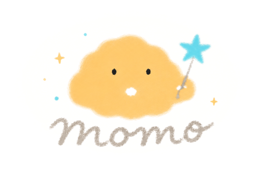

一屏看完，不用点开任何东西。开麦前先把「要拿到」那句读一遍。
momo 会陪你练习每一次重要的表达。
每一条都追溯到你的哪句话
点题目本身就直接开练；右边的开关只决定它进不进「随机换一张」的池子。
今天想讲哪一位？

自己的题会追加到现有题库里，不覆盖自带的那些。全程在这台电脑上完成，文件不会上传到任何地方。
复制这段提示词，发给任意一个 AI，把它给你的结果存成 .json 或 .csv 再传上来。提示词里已经写死了字段名和可选值。
复盘的总评、逐句点评、追问预演都需要 AI。填你自己的密钥，请求从这台电脑直接发出，不经过任何第三方。
这是本地 demo 的临时做法。正式版密钥只存服务端，浏览器永远拿不到。